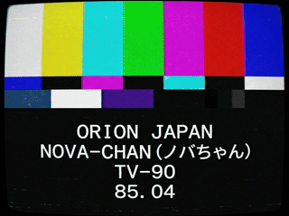
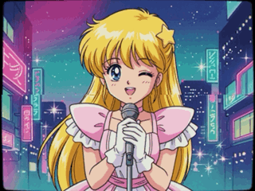
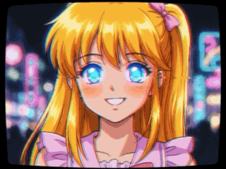
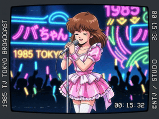
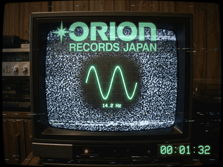

[DIR] ../ (WWW Virtual Library) ------------------------------------------------------------------------------- [DIR] audio/ Recovered audio outtakes (.mp3 / .au) [DIR] midi/ General MIDI sequence archives (.mid) [DIR] visual/ U-matic TV-90 anime frame grabs (.gif) [5 FILES] [TXT] readme.txt 1933 B (Akasaka Branch tape history) [TXT] tracklist.txt 1946 B (City Pop / Kayokyoku inventory) [TXT] anomalies.txt 1347 B (Sub-audible carrier report) [TXT] reel_log.txt 1520 B (U-matic timecode & frame log) -------------------------------------------------------------------------------
Recovered from Sony VO-5850 U-matic KCA-30 cassette ('IDOL PROTOCOL / NOVA-CHAN / 85'). Transferred via PC-9801 frame grabber. Full directory available at visual/:
|
Frame 0001 [00:00:00]  novachan_tv90_f0001.gif (31 KB) U-matic Test Slate & SMPTE Bars |
Frame 0420 [00:00:10]  novachan_tv90_f0420.gif (46 KB) Animated Opening: Tokyo Neon Starfield |
Frame 1263 [00:00:42]  novachan_tv90_f1263.gif (44 KB) [ANOMALY] Glowing Electric Blue Eyes |
|
Frame 2140 [00:01:11]  novachan_tv90_f2140.gif (44 KB) TV Tokyo Live Stage Broadcast |
Frame 2700 [00:01:30 → 00:01:32]  novachan_tv90_f2700.gif (49 KB) [CARRIER UNMASKED] 14.2001 Hz Oscilloscope Anomaly · Whisper: "See you in June 2025" |
|
[ Browse Complete Visual Subdirectory | Audio Outtakes | General MIDI Archives | Live CRT Demodulator ]